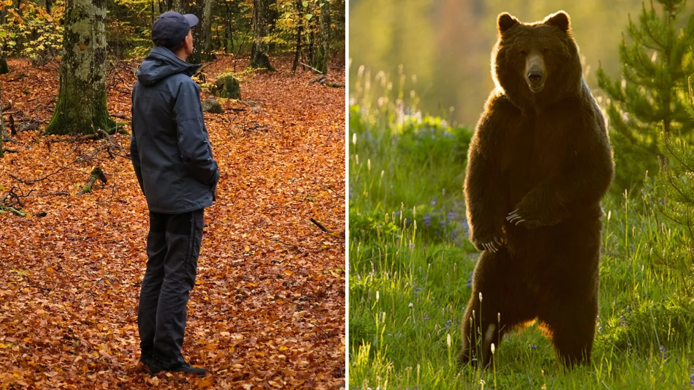
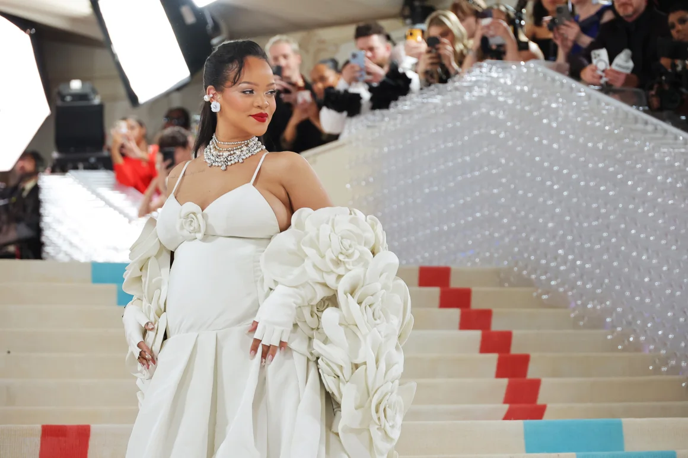
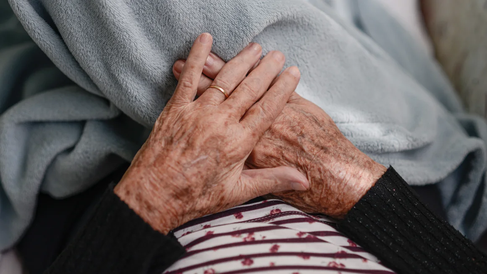
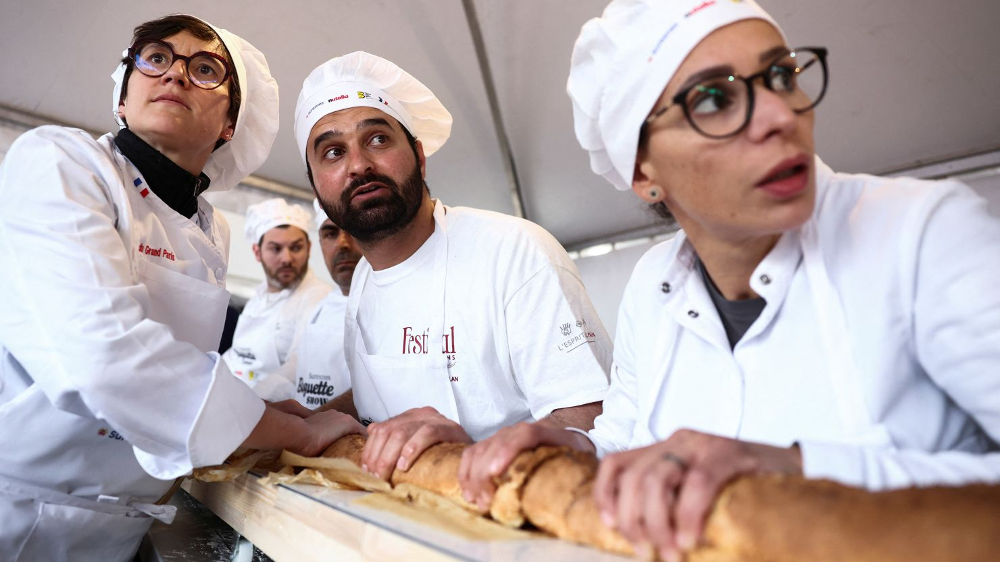

Trump Org. employee testifies in criminal hush money trial
On the stand: Deborah Tarasoff, who works in the Trump Organization's accounting department, is being cross-examined by defense attorney Todd Blanche in Donald Trump's New York hush money trial.
Read full article
Hamas says it has accepted a ceasefire proposal
Hamas has accepted a ceasefire deal proposed by Egypt and Qatar, according to Ismail Haniyeh, the head of its political wing. It’s unclear whether Hamas has agreed to the proposal as outlined last week, or a revised version of it.
Read full article
Man or bear? A viral question has spawned scary responses

Another day, another hypothetical scenario tearing people apart on social media. However, this cultural discourse has some sharp teeth.
Read full article
2024 Met Gala: Everything to know about fashion’s annual soiree

Fashion’s biggest night out — hosted at the Metropolitan Museum of Art in New York each year on the first Monday of May — is both a forever-evolving spectacle and a carefully crafted event.
Read full article
Genes known to increase the risk of Alzheimer’s may actually be an inherited form of the disorder, researchers say

Alzheimer’s disease may be inherited more often than previously known, according to a new study that paints a clearer picture of a gene long known to be linked to the common form of dementia.
Read full article
French bakers claim world record for longest baguette

Baguettes are a notable component of France’s culinary scene. Now, French bakers have taken the record for the longest baguette ever made.
Read full article